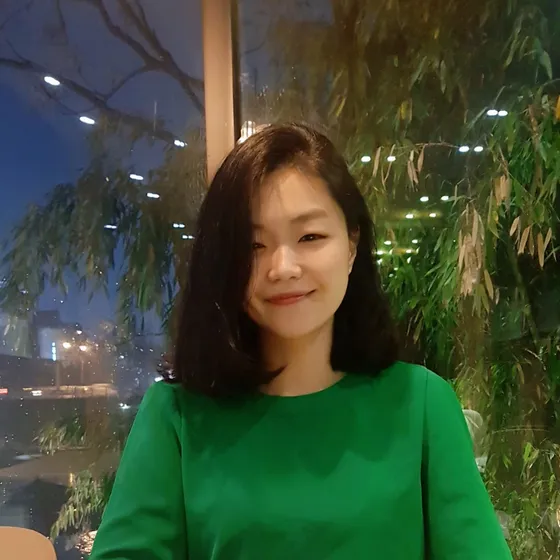

The World
as a Canvas
Materializing Imagination through Prompting the Physical World
UIST '26 Full Day Workshop
November 2, 2026 · 09:00 – 17:00 · Detroit Marriott at the Renaissance Center, Detroit, MI
Generative AI can turn a rough idea into an image, a video, or a working app in minutes — so why is creating an XR experience still so hard? Join researchers and practitioners in HCI, XR, and AI for keynotes, posters and demos, and hands-on prototyping, and help shape a shared research agenda for accessible, expressive, and collaborative XR creation.
Organizers
 HSHyunA SeoSeoul National University
HSHyunA SeoSeoul National University NNNels NumanGoogle
NNNels NumanGoogle
HJHye-Young JoUniversity of Colorado Boulder JLJaewook LeeUniversity of Washington
JLJaewook LeeUniversity of Washington
 JFJon E. FroehlichUniversity of Washington
JFJon E. FroehlichUniversity of Washington RDRuofei DuGoogle XR
RDRuofei DuGoogle XR RSRyo SuzukiUniversity of Colorado Boulder
RSRyo SuzukiUniversity of Colorado Boulder YLYoungki LeeSeoul National University
YLYoungki LeeSeoul National University
Register via UIST '26select this workshop — limited to 35 seats
Propose a poster or demooptional; polished or early-stage welcome
worldascanvas.github.io
Scan to learn more & register
Seoul National University · Google
University of Colorado Boulder · University of Washington
University of Colorado Boulder · University of Washington